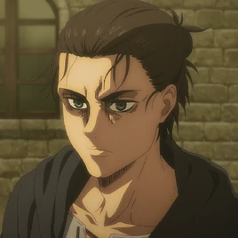

Eren Jaeger
Es el protagonista de la serie; el único hijo de Grisha y Carla Jaeger. A su vez, es el medio hermano menor paterno de Zeke Jaeger, el hermano adoptivo de Mikasa Ackerman y un Titán Cambiante, siendo el último portador del Titán de Ataque.